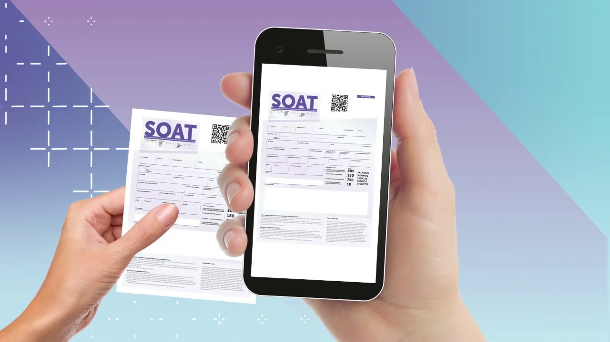

SOAT
Adquiera el Seguro Obligatorio (SOAT), en JAMYR Cia. Ltda. Asesores de Seguros, Agencia Legalmente autorizada, cuenta con el respaldo de LA PREVISORA SEGUROS, SURAMERICANA DE SEGUROS y COLPATRIA SEGUROS. Seguro Obligatorio a domicilio sin costo adicional. Pídalo al 8712528 – 8710863. La Póliza de Seguro de Daños Corporales Causado a las Personas en Accidentes de Tránsito, conocido como SOAT fue creado por la Ley 33 de 1986. El SOAT, fue creado con el fin de obtener atención médica inmediata a las personas víctimas o involucradas en un accidente de tránsito. Amparos del SOAT:
- Gastos Médicos, Quirúrgicos, Farmacéuticos y Hospitalarios.
- Incapacidad Permanente.
- Muerte de la Victima.
- Gastos Funerarios.
- Gastos de trasporte y Movilización de Victimas.
